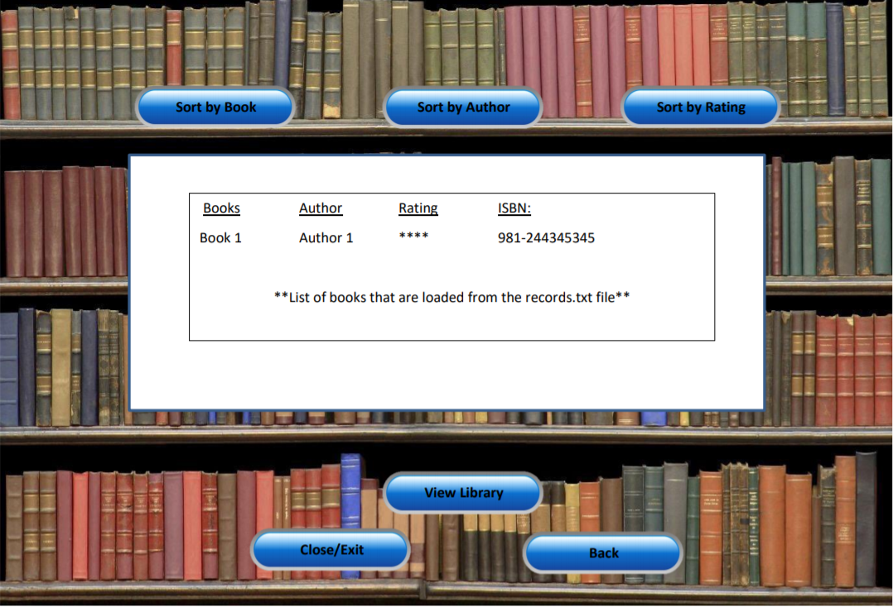
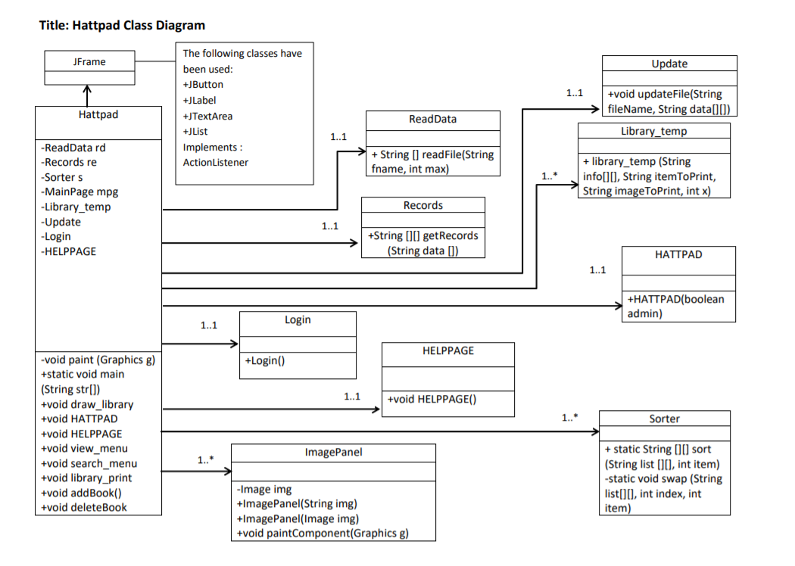
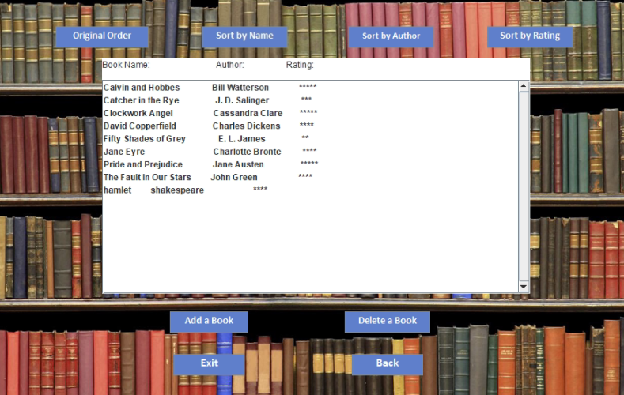

Hattpad is a local library app made using Java to store, add, delete and rate your favorite books into the database.
I created the initial mock up design of the Java aplication giving the application its own personal brand similar to the idea of Wattpad. Fun fact: Hatt stands for the the first letter in my team's last names.
The skeleton of the Java application involved allowing the user to login with their own private account, add, delete, store, and rate their own books. A feature that was later added into the project was allowing the user to sort their library in alphabetical order, by genre and by ratings using quick sort.
As the product lead, I set up milestones for our project, assigned weekly meetings to keep track of our current progress, created a project plan implementing gantt charts to set out tasks and deadlines for the team, dealt with conflict management and at the same time co-developed the functionality and design of Hattpad.
The best part of this project would be my duty as the product lead. As the product lead, I got to communicate with my team members, identifying the business needs and evaluating ways to satisfy beyong customer expectations and being responsible for the end to end design of the product itself.
Hattpad was created as a course project and ended up ranking as the #1 best product in the course. Another fun fact would be that our instructor loved it so much, she kept the product to show her students every year.